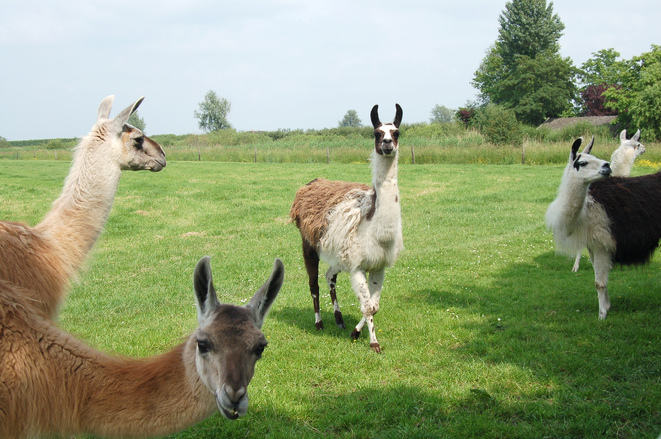

Interesting Facts

Following are some interesting facts about llama:
-
Although llamas are Camelidae animals, they don't have the humps like camels do
-
Llamas normally use hums and clucking sounds for communication with other llamas
-
Llamas are larger than what you might think! They can be 6 feet tall and their weights range from 280 - 450
pounds